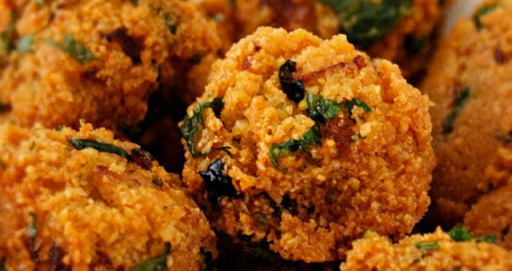

Gato Pima (Chilli cakes)

Ingredients
These deliciously spicy gateau piment are best served hot and are perfect with a crisp beer like Pheonix (Mauritius Beer). We can also have this in bread for breakfast with fresh bread adn tea :) Bon Appetit!
- 100g yellow split peas*
- 2 Spring Onions
- 2 Chilli - dried red
- 2 Chill - fresh green birds eye
- 1 Tbs Salt
- 1/2 bunch Coriander including the stalk
- 2 (6.5 ounce) cans canned tomato sauce
- *please note the yellow split peas need to be pre-soaked in water for 24 hours
Steps
- In a food processor grind the yellow split peas until it resembles a fine paste, this takes around 5 minutes. Remove from food processor and place into a large mixing bowl.
- Finely chop spring onions, chilli and coriander, and crush in the dried chilli and add this to the yellow spit peas. Mix thoroughly and season with salt.
- Using a deep fat fryer set the temperature to 180, roll the mixture into small balls and deep fry until golden brown.
Back to Home Page